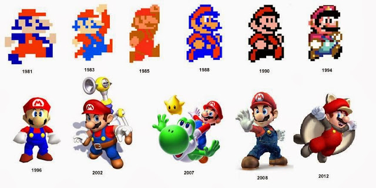
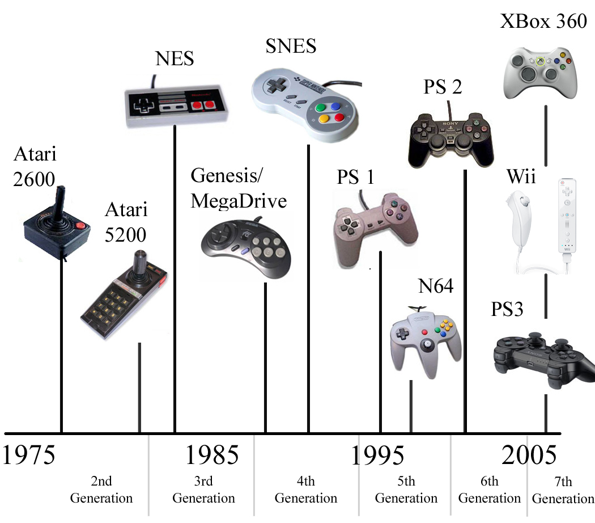

Evolución de los gráficos
El objetivo de los videojuegos, como medio de ocio, siempre ha sido el de entretener al usuario, desde sus inicios a nuestros días se ha mantenido esta máxima, pero tanto en el contenido como en la apariencia estos han evolucionado a pasos agigantados, avivados entre otras cosas por el rápido desarrollo de diferentes tecnologías. Tanto han evolucionado los videojuegos, que cada vez nos es más difícil relacionar los juegos pioneros con las grandes superproducciones que se lanzan hoy día.
William Higginbotham
Físico que trabajaba para el gobierno de los Estados Unidos y gran aficionado al pinball, se le ocurrió algo interesante, realizar una especie de juego de tenis, para ello necesito de una máquina conectada a un osciloscopio que hacía las veces de monitor. El resultado final se llamaba Tennis for Two, y consistía en una línea horizontal que representaba el suelo del campo de Tenis y de una línea pequeña vertical en la mitad del campo que representaba la red, los jugadores debían elegir el ángulo en que debía salir la bola y golpearla. Este podría ser el primer videojuego, pues es más realista que el propio Pong quince años después.

Evolución de los mandos de consola
